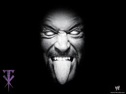
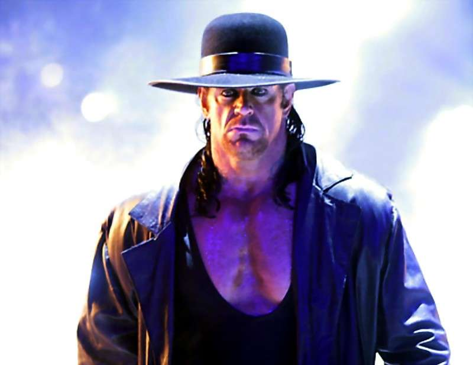

Paragraphe1
On l’attendait avec impatience, on s’est préparé toute la semaine, tout le mois même et c’est finalement chose du passé … tout comme la carrière de l’homme d’outre-tombe qui, à Wrestlemania 33, a laissé son mythique chapeau au centre du ring pour mettre un terme à sa légendaire carrière.
Une fin sur la plus grande scène pour l’un des plus grands, Après sept heures de lutte dimanche, voici mes impressions de cette soirée marquante à la WWE qui, avec un recul, était drôlement satisfaisante, pour ne pas dire agréablement surprenante. On le voyait venir depuis quelques années et là, on peut dire que l’âge a rattrapé la légende de l’Undertaker.
Paragraphe2
En conclusion de Wrestlemania, c’était pénible à voir. Tous nos beaux souvenirs de l’homme d’outre-tombe se percutaient aux images d’un homme qui offrait de peine et de misère une dernière performance au mieux de ses capacités pour les partisans de la WWE. On ne peut pas en vouloir à Roman Reigns pour le résultat et le déroulement. C’était, d’une certaine façon, la bonne chose à faire. Un meurtre par compassion si on veut. Je trouvais le prétexte du combat ridicule (this is my yard now) et la construction vers celui-ci plutôt malhabile, mais dès que les deux hommes ont laissé de cotés ces grandes lignes, dimanche, quelque part après la tentative ratée de Reigns de renverser un «tombstone», la magie s’est installée car on savait ce que l’on vivait.
Paragraphe3
Ainsi, la victoire de Roman Reigns est presque oubliée, comme celle de Shawn Michaels contre Ric Flair à l’époque. Le jeune Reigns s’est rapidement retiré et la scène appartenait au défunt, comme c’est la tradition à la lutte : on sort sur le dos pour offrir une poussée à la relève.
Paragraphe4
Dans l’âme, The Undertaker a visité le plancher longuement avant de laisser son habit de lutteur au centre du ring. Pour une rare fois, il a brièvement brisé son personnage pour embrasser sa femme, Michelle McCool, aux abords du ring, puis il a quitté comme il est venu – dans un nuage de fumée après trois longs coups de gongs. Avec le recul, c’était la fin parfaite avec Jim Ross au micro, même si ça fait un pincement au cœur de voir l’ombre d’une légende sur le ring. Repose en paix et merci pour tous les souvenirs.